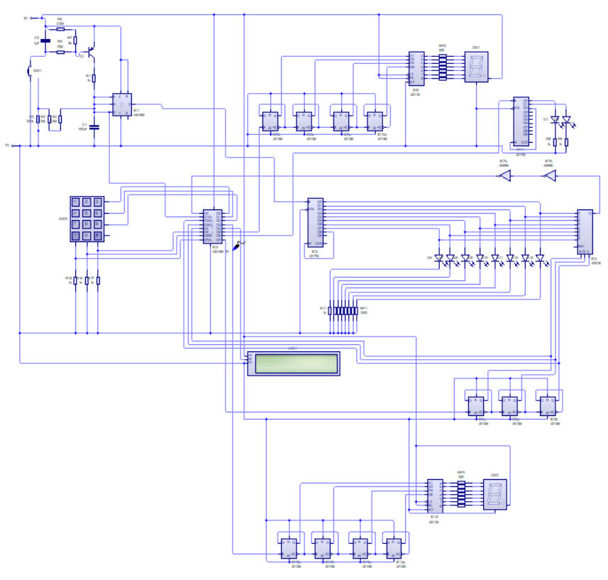
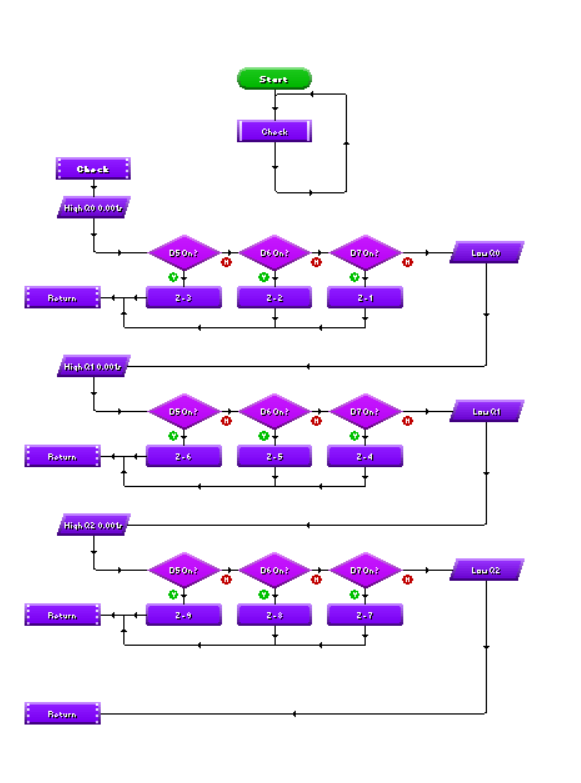

Block 1- Block 1, is a 555 decreasing oscillator. When the user presses the switch it sets the length of the spin, by how long they press down the switch. The 555 timer rapidly goes from logic 1 to logic 0 with the frequency decreasing until it stays logic 1. The 555 timer has 3 resistors in series, of values of 220kΩ and 2x 2.2MΩ which are used to set the max time the switch can be pressed hence the high resistance. There is also a transistor which when the switch is held begins to drain through a 1μF capacitor charging it. Then it drains through a 100nF capacitor. Output 3 on the 555 timer outputs to a 4017 decade counter. Block 2- Block 2, is made up of a 4017b decade counter and 8 LEDs, the 555 decreasing oscillator clocks the 4017b causing it to count from 1-8 and then reset on 9. There are 8 1kΩ pull down resistors for the LEDs. When the user presses the switch in block 1 it constantly pulses, causing the 4017b to clock, counting through from 1-8. When the decreasing oscillator ends and it stays on logic 1, one LED remains lit, like a roulette wheel spinning. Block 3- Block 3 is a keypad, because I only need numbers from 1-8, I have removed the bottom row with the 0, # and * on. It works by outputting logic 1 from one of the outputs on the chip and checking if any of the columns are high, which is connected to the inputs on the chip that then sets variable “Z” to the according value. The columns have 3 pull down resistors of values of 1kΩ. Block 4- Block 4 is a 4051b multiplexer and 3 bit binary counter. There is one output pulsing the binary counter, this cycles through binary values from 000-111, this is then inputted to the 4051b multiplexer. It cycles through the binary values until the “Q” output on the 4051b is high at which point the binary value is recorded as the 3 binary clocks input to the chip. So when “Q” is high on the 4051b its inputted to the chip and the binary value from the clock is recorded and corresponds to a specific LED. The colour and number of this LED is recorded as variable C and L respectively. Block 5- Block 5 is an LCD, this walks the user through the process of placing the bet of the colour and number of LED, as well as telling them how to play. When the program starts the LCD asks the player to pick a colour. This is done as pressing 1 selects red and 2 selects yellow. Next the player is asked to pick an LED, with the player inputting a number from 1-8. The colour guess is recorded as J and the LED guess is recorded as M. The player is then asked to spin the wheel by pressing the switch in block 1. This is checked by checking if pin 2 on the 555 timer is high, as it only goes high once the timer starts spinning. This is connected to a pin on the chip. Next the values are compared to the actual colour and number of the LED. A score is then collected. 2 is added for both number and letter correct, as well as 1 for either the number and colour. The player is then asked if they’d like to play again, if so the program is restarted and if not the score is displayed and the program ends. Block 6- Block 6 is a 4 bit binary counter, 4511b and 7 segment display. There are 2 of these circuits which display the users bet and score. The chip pulses the binary counter a certain number of times depending on the number which needs to be displayed on the 7 seg display. This works by the 4 bit binary counter outputting a binary value between 0000 and 1111 which is inputted to D1, D2, D4, and D8 on the chip. This cycles the a,b,c,d,e,f,g outputs on the 4511b which are numbers from 1-9. The amount of pulses are defined by the variables ”M” for the bet 7 seg display and variable S for the score. Block 7- Block 7 is a 4017b decade counter and 2 LEDs. These show the players colour bet, one LED is red and the other is yellow. The chip pulses once for red and twice for yellow. It is also reset on the 3rd pulse. The number of pulses is decided by the “J” variable which refers to the player's colour bet.
Roulette Wheel
Circuit diagram
Programming
For the keypad
